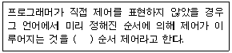
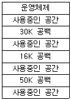
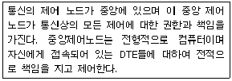

사무자동화산업기사 (2013-03-10 기출문제)
1과목: 사무자동화 시스템
1. 사무실의 생산성과 관련된 특징으로 옳지 않은 것은?
- 성과가 투입된 시점부터 훨씬 늦게 나타난다.
- 직접 산출효과 이외에 축적 산출효과가 있다.
- 사무실의 생산성은 직접적으로 평가할 수 없다.
- 투입 자원을 정량화하기가 어렵다.
(정답률: 55%)

2. 사무자동화의 방법론에 대한 설명으로 옳지 않은 것은?
- 전사적 접근 방식 : 소규모 조직이나 신설 조직에 적합한 방식으로 사무자동화 대상이 되는 모든 시스템, 전 업무, 전 계층에 걸쳐 추진되는 방식
- 부분 전개 접근 방식 : 기획, 인사, 관리 등 전시 효과가 크고 수행이 쉬운 부서를 우선적으로 고려하여 추진하는 방식
- 계층별 접근 방식 : 사무자동화 기기를 시험적으로 도입하여 사용자의 사무자동화 이해도를 높이고, 단계적으로 적용 분야를 넓혀가는 방식
- 업무별 접근 방식 : 업무 개선이 우선되어야 할 분야부터 시작하여 완료시까지 업무의 흐름에 따라 사무자동화를 추구해 나가는 방식
(정답률: 71%)
3. 전자우편시스템의 주요기능으로 개인은 물론 그룹 혹은 선별된 다수인에게 복사, 중복된 문서의 작성 없이 동시에 같은 내용을 편지로 보낼 수 있는 기능은?
- 동보 기능
- 시간별 전송기능
- 저장 및 열람기능
- 배달 증명기능
(정답률: 93%)
4. 컴퓨터가 명령을 입력받을 준비가 되어있음을 사용자에게 알리는 신호를 무엇이라고 하는가?
- Access
- Inquiry
- Prompt
- Advance
(정답률: 55%)
5. 사무자동화의 구체적 효과는 정량적 효과와 정성적 효과로 나누어 생각 할 수 있다. 다음에서 정량적 효과에 대한 설명으로 옳은 것은?
- 문제 해결에 대한 보조 도구로 활용
- 보고서나 자료를 필요한 내용에 따라 작성
- 기업 내에서의 사기 앙양으로 업무능률 향상
- 재고, 설비, 금리 등에 대한 고정비, 간접비의 개선
(정답률: 80%)
6. 데이터베이스 구조와 관계, 이름, 액세스 방법 등을 규정하는 목적으로 사용하는 언어는?
- DCL
- DDL
- DML
- DBMS
(정답률: 61%)
7. 다음 중 사무실 내부 환경 분석에 해당하지 않은 것은?
- 사무 구성원 분석
- 공공정보서비스 현황
- 업무 분석
- 사무기기 분석
(정답률: 72%)
8. 사무자동화의 궁극적인 목적은?
- 자재비용의 감소
- 생산성 향상
- 정보통신 활용
- 컴퓨터의 대중화
(정답률: 84%)
9. 그래픽 정보는 점, 선, 원, 다각형과 같은 기하학 요소의 조합으로 표시하는 비디오텍스 방식은?
- 알파 모자이크 방식
- 알파 지오메트릭 방식
- 알파 포토그래픽 방식
- 알파 블렌딩 방식
(정답률: 65%)
10. 데이터베이스 관리시스템의 장점으로 옳지 않은 것은?
- 표준화가 용이
- 데이터 중복의 최소화
- 데이터의 공유 가능
- 운영비 초과가 적음
(정답률: 72%)
11. 사무자동화 시스템의 목적에 가장 거리가 먼 것은?
- 욕구의 다양화에 대처
- 처리의 신속화와 정확화
- 처리의 투명화
- 사무원의 건강 검진
(정답률: 93%)
12. 처리되는 자료의 신호특성에 따라 컴퓨터를 분류한 것으로 옳은 것은?
- 아날로그컴퓨터와 디지털컴퓨터
- 범용컴퓨터와 특수용컴퓨터
- 마이크로컴퓨터와 미니컴퓨터
- 소형컴퓨터와 대형컴퓨터
(정답률: 88%)
13. 다음 중 입력 장치에 해당하지 않는 것은?
- 스캐너
- 디지타이저
- 플로터
- 라이트 펜
(정답률: 57%)
14. 다음 중 분산처리시스템의 목적과 거리가 먼 것은?
- 시스템 보호
- 처리속도 향상
- 자원공유 증대
- 신뢰성 증대
(정답률: 60%)
15. 블루레이 디스크(Blu-ray Disc) 에 대한 설 명 으로 옳지 않은 것은?
- 고선명 비디오를 위한 디지털 데이터를 저장할 수 있다.
- DVD 디스크에 비해 훨씬 짧은 파장을 갖는 레이저를 사용한다.
- 단층 기록면을 갖는 블루레이 디스크는 최대 10기가바이트까지 데이터를 기록할 수 있다.
- DVD와 같은 크기인데도 더 많은 데이터를 저장할 수 있다.
(정답률: 55%)
16. 전자상거래를 하는 사업자의 금지행위에 해당하지 않는 것은?
- 거짓 또는 과장된 사실을 알리거나 기만적 방법을 사용하여 소비자를 유인 또는 소비자와 거래하거나 청약철회 등 또는 계약의 해지를 방해하는 행위
- 재화 등의 거래에 따른 대금정산을 위하여 필요한 경우 본인의 허락을 받지 아니하거나 허락받은 범위를 넘어 소비자에 관한 정보를 이용하는 행위
- 청약철회 등을 방해할 목적으로 주소, 전화번호 등을 변경 하거나 폐지하는 행위
- 분쟁이나 불만처리에 필요한 인력 또는 설비의 부족을 상당기간 방치하여 소비자에게 피해를 주는 행위
(정답률: 46%)
17. CAM(Content Addressable Memory)에 대한 설명으로 옳은 것은?
- 주소 공간의 확대가 목적이다.
- 하드웨어 비용이 대단히 적다.
- 구조 및 동작이 대단히 간단하다.
- 저장된 정보의 내용 자체로 검색한다.
(정답률: 46%)
18. 공동 작업이나 공동 목표에 참여하는 다양한 작업 그룹을 지원하는 응용시스템은?
- 데이터베이스 관리시스템
- 운영체제
- 그룹웨어 시스템
- 입출력 시스템
(정답률: 90%)
19. 정보보호 기술·분야에 가장 적합하지 않은 것은?
- 방화벽(Firewall) 시스템
- 가상 사설망(VPN) 시스템
- 실시간 교통제어(ATC) 시스템
- 공개키 기반(PKI) 시스템
(정답률: 77%)
20. 그래픽 단말기의 화면 출력 방식 중 플라즈마(PDP) 방식에 대한 설명으로 옳지 않은 것은?
- 방전 원리를 이용한 화면 출력 방식이다.
- 화면을 3개의 유리면으로 구성하여 해상도가 높은 그래픽용으로 적합하다.
- 가격이 다소 비싸고 구동 회로가 복잡하다.
- 전력소모가 비교적 작다.
(정답률: 55%)
2과목: 사무경영관리 개론
21. 행정업무의 효율적 운영에 관한 규정에서 접수한 문서에 표시해야 하는 것은? (단, 종이문서가 아닌 경우임)
- 송신처, 송신자
- 수신처, 수신자
- 접수등록번호, 접수일시
- 담당자, 문서번호
(정답률: 72%)
22. 정보통신 망을 이용하여 세금 등을 납부할 때 이용할 수 있는 방법을 옳게 나열한 것은?
- 전자화폐, 전자결제
- 전자화폐, 전자인증
- 전자결제, 전자지로
- 전자인증; 전자지로
(정답률: 67%)
23. 문서 정리의 내용에 해당되지 않는 것은?
- 문서의 처리
- 문서의 보관
- 문서의 인계
- 문서의 폐기
(정답률: 32%)
24. VDT 증후군 중 전자파의 노출을 방지하기 위한 노력이 아닌 것은?
- 컴퓨터로부터 멀리 떨어져서 자주 휴식을 취한다.
- 컴퓨터 작업시 노트북 컴퓨터 대신 데스크탑 컴퓨터를 사용한다.
- 빛의 반사가 없는 곳에 모니터를 설치한다.
- 모니터는 눈으로부터 40∼50cm 거리에 있어야 한다.
(정답률: 75%)
25. 계획의 집행을 잘못하였거나 계획 집행상 예상하지 못한 변화가 생긴 경우 이에 적용 가능한 통제원칙은?
- 표준의 원칙
- 탄력적 통제원칙
- 중요항목 통제원칙
- 활동의 원칙
(정답률: 67%)
26. 사무 계획화의 효과에 대한 설명으로 옳지 않은 것은?
- 사무원의 여유시간 단축
- 최소한의 노력으로 최대한의 효과 기대
- 사무자원의 적재적소 배치
- 정확한 소요예산의 결정
(정답률: 66%)
27. 현대 과학적 사무관리의 추세가 아닌 것은?
- 사무관리의 표준화
- 사무관리의 통제화
- 사무관리의 간소화
- 사무관리의 전문화
(정답률: 63%)
28. 자료의 내용에서 중요한 역할을 하는 사항이나 인명 및 건명을 뽑아내어서 분류, 배열 한 것으로 이용자에게 필요한 정보제공 여부를 알리는 것은?
- 초록
- 색인
- 목록
- 미주
(정답률: 70%)
29. 사무에서 적용 가능한 통제수단이 아닌 것은?
- 자동독촉제도
- 카드색인제도
- 간트 도표 (Gantt chart)
- 일건별 정리제도
(정답률: 52%)
30. 공중의 수요에 충족할 수 있을 정도로 프로그램을 복제하여 공중에게 배포하는 행위는?
- 개작
- 배포
- 발행
- 공표
(정답률: 43%)
31. 전자문서를 활용하여 사무작업을 수행할 때 기대되는 효과가 아닌 것은?
- 비용의 절감
- 업무소요시간의 감소
- 서류의 중복
- 문서전달시간의 단축
(정답률: 68%)
32. 사무 분석시 적용된 동작 경제 원칙이 아닌 것은?
- 최소 비용의 원칙
- 균형이 잡힌 율동적 동작의 원칙
- 최소 노력의 원칙
- 공간 및 도구의 이용에 관한 원칙
(정답률: 34%)
33. 2장 이상으로 이루어진 문서 중 문서의 순서 또는 연결 관계를 명백히 할 필요가 있는 문서에 하지 않아도 되는 것은?
- 접수번호
- 쪽 번호
- 발급번호
- 간인
(정답률: 37%)
34. 산업 안전보건기준에 관한 규칙 에 의거 "적정 공기"의 평가 대상에 포함되지 않는 것은?
- 암모니아 농도
- 산소 농도
- 탄산가스 농도
- 황화수소 농토
(정답률: 47%)
35. 사무관리의 기능으로 옳지 않은 것은?
- 사무는 경영의 각 기능을 결합시켜주는 역할을 한다.
- 사무는 정보를 필요로 하는 사람에게 적시에 의사결정을 신속히 내릴 수 있도록 조언적 서비스를 제공한다.
- 사무는 본래의 직무수행이 효율적으로 관리될 수 있도록 조언 및 뒷받침을 하기도 한다.
- 사무는 서류작성, 문서정리 작업만을 행하는 효율적 문서처리 활동이다.
(정답률: 67%)
36. 행정 사무자동화를 도입함으로써 발생하는 현상이 아닌 것은?
- 팽창하는 행정수요에 대처하기 위한 능률적인 정보 서비스의 구현
- 국민의식 수준이 높아짐에 따라 보다 나은 행정서비스의 요구
- 정보생산량의 증가에 따른 행정 정보관리의 과학화 필요성이 증대
- 관련 업무량의 고도화로 인건비 및 관리비가 상대적으로 증가
(정답률: 74%)
37. EDI 시스템에 관한 설명 중 옳은 것은?
- 수신자의 데이터 추출 및 재입력
- 당사자간 즉시 이동
- 구조화된 표준 양식
- person to person
(정답률: 59%)
38. 사무의 시스템적 관점에 대하여 가장 올바르게 설명한 것은?
- 사무 시스템은 독립적이므로 각 부서별 사무 처리는 서로 연관성이 없다.
- 사무 시스템은 경영 각 부분의 전체가 상호 관련되어 시너지 효과를 가진다.
- 사무 관리의 용이성만을 강조하여 사무 관리의 생산성을 증대한다.
- 사무 관리의 목표를 더욱 효과적으로 달성하기 위해 특정 부분을 강조한다.
(정답률: 60%)
39. 경영정보와 사무에 관한 설명으로 옳지 않은 것은?
- 정보는 현재의 의사결정 상태를 정확하게 기술하여 예측하게 한다.
- 정보는 행동방안의 적절성을 제시해 준다.
- 경영은 의사결정의 흐름이며 의사결정에는 정보가 필수적이다.
- 맥 도노우(A.H. McDonough)는 경영상의 의사결정에 있어 경영은 정보를 행동으로 연결시키는 과정으로 본다.
(정답률: 63%)
40. 공공기록물 관리에 관한 법률상 공공기관은 대통령령으로 정하는 바에 따라 기록물을 분류하여 보관할 때 고려하지 않아도 되는 것은?
- 기록물의 보존기간
- 기록물의 공개여부
- 기록물의 보관 장소
- 기록물의 접근권한
(정답률: 65%)
3과목: 프로그래밍 일반
41. 프로그램 언어의 문장구조 중 성격 이 다른 하나는?
- while(expression) statement;
- for(expression-1; expression-2; expression-3) statement;
- if expression) statement-1 ; else statement-2;
- do{statement;} while(expression);
(정답률: 55%)
42. 순서 제어에 대한 다음 문장의 괄호 안 내용으로 가장 적합한 것은?

- 명시적
- 묵시적
- 구조적
- 수학적
(정답률: 86%)
43. 고급 언어로 작성된 원시 프로그램을 해석하고 분석하여 목적 프로그램을 생성하는 것은?
- Operating System
- DBMS
- Word Processor
- Compiler
(정답률: 85%)
44. 구문에 의한 문장 생성 과정을 나타내는 것으로서, 어떤 표현이 BNF에 의해 바르게 작성되었는지 확인하기 위해 만드는 트리는?
- 문법 트리
- 파스 트리
- 어휘 트리
- 구문 트리
(정답률: 87%)
45. 다음 그림과 같은 기억 장소에서 15K를 요구하는 프로그램이 세 번째 공백인 50K의 작업 공간에 배치하는 기억 장치 배치 전략은?

- First Fit Strategy
- Best Fit Strategy
- Worst Fit Strategy
- Big Fit Strategy
(정답률: 81%)
46. C 언어에서 사용하는 기억 클래스에 해당하지 않는 것은?
- Scope
- Register
- Static
- Auto
(정답률: 54%)
47. BNF에 사용되는 기호 중 선택(택일)의 의미를 갖는 것은?
- ::=
- < >
- ㅣ
- { }
(정답률: 85%)
48. 수학적' 수식 "A+B*C-D"을 후위 (Postfix) 표기법으로 표현한 것은?
- ABC*D-+
- AB+C*D-
- ABC+*D-
- ABC*+D-
(정답률: 70%)
49. 프로그래밍 언어에서 시스템이 알고 있는 특수한 기능을 수행하도록 이미 용도가 정해져 있는 단어로서, 프로그래머가 변수 이름이나 다른 목적으로 사용할 수 없는 것은?
- 배열
- 상수
- 포인터
- 예약어
(정답률: 76%)
50. 시스템 프로그래밍 언어로 가장 적합한 것은?,
- BASIC
- COBOL
- C
- FORTRAN
(정답률: 87%)
51. 프로그램 수행 순서로 옳은 것은? '
- 원시 프로그램→링커→로더→컴파일러→목적 프로그램
- 컴파일러→목적 프로그램→원시 프로그램→링커→로더
- 원시 프로그램→목적 프로그램→컴파일러→링커→로더
- 원시 프로그램→컴파일러→목적 프로그램→링커→로더
(정답률: 86%)
52. 요소 선택과 삭제는 한쪽에서, 삽입은 다른 쪽에서 일어나도록 제한하는 것은?
- 스택
- 트리
- 큐
- 방향 그래프
(정답률: 49%)
53. 페이징 시스템에서 페이지의 크기에 관한 설명으로 옳지 않은 것은?
- 페이지의 크기가 작을수록 보다 적절한 작업세트를 유지할 수 있다.
- 페이지의 크기가 클수록 참조되는 정보와 무관한 정보들이 많이 적재된다.
- 페이지의 크기가 클수록 내부 단편화가 감소한다.
- 페이지의 크기가 작을수록 페이지 테이블의 크기가 커진다.
(정답률: 68%)
54. 프로그램을 구성 하는 함수에서 전역 변수를 사용하여 함수의 결과를 반환하는 경우, 함수에 전달되는 입력 파라미터의 값이 같아도 전역 변수의 상태에 따라 함수에서 반환되는 값이 달라질 수 있는 현상을 무엇이라 하는가?
- Reference
- Side Effect
- Monitor
- Recursive
(정답률: 44%)
55. 프로그램 개발 과정에서 프로그램 안에 내재해 있는 논리적 오류를 발견하고 수정하는 작업을 무엇이라고 하는가?
- 디버깅 (Debugging)
- 링킹(Linking)
- 바인딩 (Binding)
- 로딩 (Loading)
(정답률: 89%)
56. 주석(Comment)의 제거, 상수 정의 치환; 매크로 확장 등 컴파일러가 처리하기 전에 먼저 처리하여 확장된 원시 프로그램을 생성하는 것은?
- Cross compiler
- Loader
- Preprocessor
- Linker
(정답률: 55%)
57. 운영 체제의 성능 평가 항목으로 거리가 먼 것은?
- 사용 가능도
- 반환 시간
- 처리 능력
- 비용
(정답률: 74%)
58. "프로그램의 판독성이 좋다"는 의미로 가장 적절 한 것은?
- 변수의 개수를 적게 사용한다.
- 암시적 문장을 많이 포함한다.
- 번역기가 번역시간을 짧게 할 수 있다.
- 문서 없이 프로그램의 이해가 가능하다.
(정답률: 70%)
59. 미 국방성의 주도로 개발된 고급 프로그램 작성 언어로서, 데이터 추출과 정보 은폐에 주안점을 두었고 입출력 기능어 뛰어나서 대량 자료 처리에 적합한 언어는?
- Ada
- APL
- SNOBOL 4
- PL/1
(정답률: 72%)
60. 기계어에 대한 설명으로 옳지 않은 것은?
- 프로그램의 유지보수가 용이하다.
- 2진 수 0과 1만 사용하여 명령어와 데이터를 나타낸다.
- 컴퓨터가 직접 이해할 수 있어 실행 속도가 빠르다.
- 전문적 지식이 없으면 이해하기 어렵다.
(정답률: 56%)
4과목: 정보통신 개론
61. 데이터링크 계층의 주요 기능이 아닌 것은?
- 데이터링크 접속 설정
- 흐름제어
- 에러제어
- 경로선택
(정답률: 43%)
62. 변조속도의 단위로 옳은 것은?
- Baud
- CPS
- WPS
- PPS
(정답률: 78%)
63. 데이터 교환 방식의 유형에 포함되지 않는 것은?
- 주파수교환
- 패킷교환
- 메시지교환
- 회선교환
(정답률: 47%)
64. 샤논(Shannon)의 정리에 따라 백색 가우스 잡음이 발생되는 통신로의 용량 C가 바르게 표시된 것은?
- C=Wlog2(1+S/N)
- C=Wlog10(1+S/N)
- C=Wlog2(1+N/S)
- C=Wlog10(1+N/S)
(정답률: 45%)
65. 송신측에서 1개의 프레임을 전송한 후, 수신측에서 오류의 발생을 점검하여 ACK 또는 NAK를 보내올 때 까지 대기하는 ARQ 방식은?
- 선택적 ARQ
- 적응적 ARQ
- 연속적 ARQ
- 정지-대기 ARQ
(정답률: 82%)
66. 통신 프로토콜(protocol)의 기본 요소에 해당하지 않는 것은?
- Format
- Syntax
- Semantics
- Timing
(정답률: 73%)
67. HDLC 프레임 구조 중 주소영역에서 모든 스테이션에게 프레임을 전송하기 위한 값으로 맞는 것은?
- 00000000
- 00001111
- 11110000
- 11111111
(정답률: 70%)
68. 미국 군사용 방공 시스템으로 사용된 최초의 데이터통신 시스템은?
- ARPA
- CTSS
- SABRE
- SAGE
(정답률: 70%)
69. DSU(Digital Service Unit)의 기능으로 맞는 것은?
- 아날로그 신호를 디지털 데이터로 변환시킨다.
- 디지털 데이터를 아날로그 신호로 변환시킨다.
- 아날로그 신호를 아날로그 데이터로 변환시킨다.
- 디지털 데이터를 디지털 신호로 변환시킨다.
(정답률: 73%)
70. LAN의 매체 접근 제어 방식 중 Token Passing 방식에 사용되는 Token의 기능으로 맞는 것은?
- 채널의 사용권
- 노드의 수
- 전송매체
- 패킷 전송량
(정답률: 46%)
71. 패킷 교환 방식(packet switching)의 특징이 아닌 것은?
- 메시지 교환 방식과 같이 축적 교환 방식의 일종이다.
- 트래픽 용량이 적은 경우에 유리하다.
- 전송할 수 있는 패킷의 길이가 제한되어 있다.
- 데이터 그램과 가상회선방식이 있다.
(정답률: 31%)
72. 통신제어장치의 기능에 해당하지 않는 것은?
- 문자의 조립 및 분해
- 전송 제어
- 오류 검출
- 통신 신호의 변환
(정답률: 50%)
73. 데이터 전송의 흐름이 양방향으로 전송이 가능하지만, 동시에 양방향으로 전송할 수 없으므로 정보의 흐름을 전환하여 반드시 한 방향으로만 전송하는 전송방식은?
- 전이중(Full Duplex) 방식
- 반이중(Half Duplex) 방식
- 단방향(Simplex) 방식
- 비동기(Asynchronous) 전송 방식
(정답률: 70%)
74. 네트워크 계층 이상의 망 간 접속 기능을 수행하는 장치로 보통 두 개의 서로 다른 망들을 상호 연결하는데 사용하는 것은?
- Adapter
- Repeater
- Gateway
- Bridge
(정답률: 65%)
75. OSI 7계층 중 응용간의 대화제어(Dialogue control)를 담당하는 것은?
- 애플리케이션 계층(Application Layer)
- 프레젠테이션 계층(Presentation Layer)
- 세션 계층(Session Layer)
- 트랜스포트 계층(Transport Layer)
(정답률: 53%)
76. 불균형적인 멀티 포인트 링크 구성에서 회선제어 방식 중 주 스테이션에서 각 부 스테이션에게 데이터 전송을 요청하는 방법은?
- 실랙션 방식
- 대화모드 방식
- 폴링 방식
- 회선쟁탈 방식
(정답률: 58%)
77. HDLC 프로토콜에 대한 설명으로 맞는 것은?
- 문자 위주의 회선제어 프로토콜이다.
- 반이중 통신과 전이중 통신을 모두 지원하며 동기식 전송방식을 사용한다.
- 데이터 링크 형식이 멀티 포인트 링크 방식만 가능하다.
- 전송 데이터에 대한 에러검출 기능이 없다.
(정답률: 45%)
78. 비동기(asynchronous) 데이터 전송을 바르게 설명한 것은?
- 순수한 메시지만을 전송하는 것이다.
- 송수신 클록에 따라 데이터를 전송하는 것이다.
- 한 데이터 블록단위로 데이터를 전송하는 것이다.
- 한 문자 전송 때마다 시작과 정지비트를 갖고 전송되는 것이다.
(정답률: 63%)
79. 다음과 같은 특성을 갖는 네트워크 형상은?

- 버스형
- 링형
- 성형
- 계층형
(정답률: 60%)
80. 뉴미디어의 특징과 가장 거리가 먼 것은?
- 단방향성
- 네트워크화
- 분산적
- 특정 다수자
(정답률: 57%)